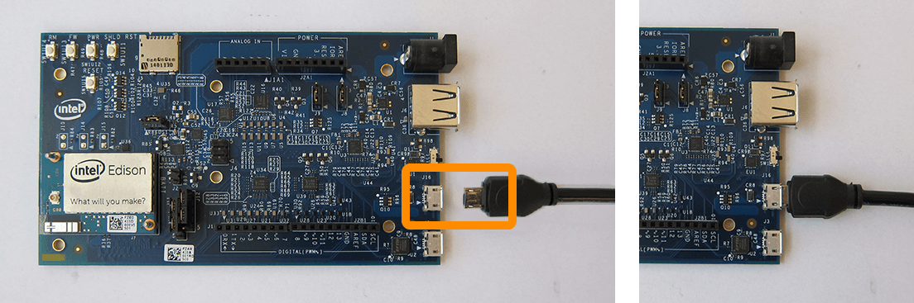

Step 1: Prepare built-in flash storage (Mac)
Make sure there are no files on the built-in flash storage of the Intel® Edison by formatting the storage. The storage must be formatted as FAT32.

-
In order to read or write to the Intel® Edison’s built-in flash storage, connect the Intel® Edison to your computer via the device mode micro-USB connector.

-
Use Disk Utility to format the flash storage drive.
Option 1:
- Launch Spotlight (type Cmd+Space).
- Type “disk”.
- Select the “Disk Utility” app.
Option 2:
- Go to Applications on your Mac.
- Open Utilities.
- Launch Disk Utility.app.
-
In the left hand sidebar of Disk Utility, select the “Edison” drive.

-
Select the “Erase” tab.
-
For “Format”, make sure “MS-DOS (FAT)” is selected.
The Intel® Edison will not flash properly if the memory is not formatted as FAT32. Make sure “MS-DOS (FAT)” is selected which is FAT32.
-
Click the “Erase” button.

-
In the popup, click “Erase” to confirm.
The Intel® Edison on-board storage memory should now be formatted as FAT32 and empty.